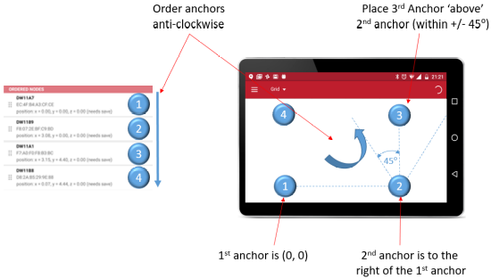

Prepare the Anchors
- Select 4 units to be anchors
- Mount them high on walls or tripods, preferably above head height
- Ensure they are all on the same plane
- Arrange them approximately in a rectangular shape
- Power them using USB mains power supplies or USB battery packs
Prepare the Tags
- Select 1 unit to be a tag
- Power the tag by either (a) connecting a USB battery pack or (b) opening the enclosure and inserting a rechargeable battery
Prepare the Tablet
- Download the .apk Android application file (Decawave DRTLS Manager) from the Decawave website to your tablet
- Follow the instructions on the tablet to install the application
Create a Network
- Open the Decawave DRTLS Manager application
- Tap ‘Start Device Discovery’
- Tap one of the discovered devices and an option will appear to name a network – this device will be added to that network
- Repeat for the remaining devices to add them to this network
- All units will initially appear as tags in ‘passive’ UWB mode
Configure the Units as Anchors or Tags
Tap the network and then tap each device in turn to configure it:
- First, identify the unit by unchecking the LED checkbox and tap accept button in upper right corner to save.
The LEDs on that device will turn off.
- To configure the 4 anchors:
- Set the ‘Node Type’ to ‘Anchor’
- Set ‘UWB’ to ‘Active’
- For any one of the anchors, check the ‘Initiator’ box (there must always be one initiator in the network)
- Tap accept button in upper right corner to save
- To configure the tag:
- Set the ‘Node Type’ to ‘Tag’
- Set ‘UWB’ to ‘Active’
- Set the location rate to a fast rate be selecting: ‘100 ms/10 Hz’
- Select ‘responsive mode’, ‘stationary detection’ and ‘location engine’
- Tap accept button in upper right corner to save
Auto-Position the Anchors (for up to 4 anchors)
Note: Using the Auto-Positioning function to automatically retrieve anchor locations is a demonstration-only feature. For a commercial installation this feature should not be used. Accurately measured anchor positions should be entered manually (see below).
- From the ‘Network Details’ screen, tap the “Auto-Position” button in the pull-down menu on the upper right
- A list of anchors (within Bluetooth range) appears
- Re-order the anchors in the list to match their locations in the room:
- Order the anchors to be anti-clockwise in the room
- The 1st anchor in the list is the (0,0) co-ordinate
- The 2nd anchor is to the right of the 1st (on the x-axis)
- The 3rd anchor should be positioned ‘above’ the 2nd, as it is viewed on the grid
- The 4th anchor should be positioned ‘above’ the 1st anchor
- Tap “Measure” to start the auto-positioning

- Preview locations before saving by tapping ‘PREVIEW’
- Enter heights of the anchors by tapping ‘Z-AXIS’
- Save the anchors setup by tapping ‘SAVE’
Manually Position the Anchors
The co-ordinates of the anchors can be measured and entered manually in the settings screen of each anchor.
- From the ‘Network Details’ screen, edit each anchor by tapping
- Enter the x,y,z co-ordinate in the ‘position’ section
- Tap accept button in the upper right corner to save